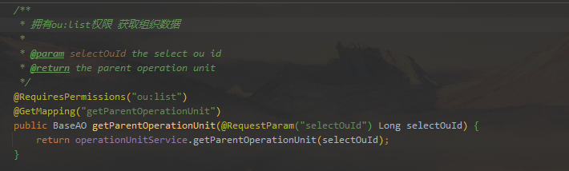

@Transactional失效#
整合shiro之后，UserRealm类里自动注入的service中的@Transactional注解失效
解决方法#
-
使用@Lazy注解
1
2
3
|
@Autowired
@Lazy
private OperationUnitService operationUnitService;
|
-
在Realm中直接使用mapper，而不是service
1
2
|
@Autowired
private OperationUnitMapper operationUnitMapper;
|
-
ApplicationContextRegister.getBean()方法，手动注入bean
1
|
OperationUnitService operationUnitService = ApplicationContextRegister.getBean(OperationUnitService.class)
|
产生原因#
在shiro中为了引入权限注解，配置了defaultAdvisorAutoProxyCreator和authorizationAttributeSourceAdvisor类，他们是通过AOP方式对@RequiredPermission类/方法(权限控制)进行增强.


生成对应的代理类对象，由于shiroFilterFactoryBean实现了factoryBean接口，所以会被提前初始化，所以引发所有相关的bean提前初始化，导致他们没有被事务AOP包裹着，从而引发事务无效的问题
1
2
3
4
5
6
7
8
9
10
11
|
/**
* 开启Shiro的注解(如@RequiresRoles,@RequiresPermissions),需借助SpringAOP扫描使用Shiro注解的类,并在必要时进行安全逻辑验证
* 配置以下两个bean(DefaultAdvisorAutoProxyCreator(可选)和AuthorizationAttributeSourceAdvisor)即可实现此功能
*/
@Bean
@DependsOn({"lifecycleBeanPostProcessor"})
public DefaultAdvisorAutoProxyCreator advisorAutoProxyCreator() {
DefaultAdvisorAutoProxyCreator advisorAutoProxyCreator = new DefaultAdvisorAutoProxyCreator();
advisorAutoProxyCreator.setProxyTargetClass(true);
return advisorAutoProxyCreator;
}
|
元素的 “proxy-target-class” 属性值来控制是基于接口的还是基于类的代理被创建。如果 “proxy-target-class” 属值被设置为 “true”，那么基于类的代理将起作用（这时需要CGLIB库cglib.jar在CLASSPATH中）。如果 “proxy-target-class” 属值被设置为 “false” 或者这个属性被省略，那么标准的JDK基于接口的代理将起作用。
快捷查看事务是否生效
1
2
3
4
5
6
7
8
9
10
11
12
13
14
15
16
17
18
19
20
21
22
23
24
25
26
27
28
29
30
31
32
33
34
35
36
37
38
39
40
41
42
43
44
45
46
47
48
49
50
51
52
53
54
|
public class DebugUtils {
private static final boolean transactionDebugging = true;
private static final boolean verboseTransactionDebugging = true;
public static void showTransactionStatus(String message) {
System.out.println(((transactionActive()) ? "[+] " : "[-] ") + message);
}
// Some guidance from: <http://java.dzone.com/articles/monitoring-declarative-transac?page=0,1>
public static boolean transactionActive() {
try {
ClassLoader contextClassLoader = Thread.currentThread().getContextClassLoader();
Class tsmClass = contextClassLoader.loadClass("org.springframework.transaction.support.TransactionSynchronizationManager");
Boolean isActive = (Boolean) tsmClass.getMethod("isActualTransactionActive", null).invoke(null, null);
return isActive;
} catch (ClassNotFoundException e) {
e.printStackTrace();
} catch (IllegalArgumentException e) {
e.printStackTrace();
} catch (SecurityException e) {
e.printStackTrace();
} catch (IllegalAccessException e) {
e.printStackTrace();
} catch (InvocationTargetException e) {
e.printStackTrace();
} catch (NoSuchMethodException e) {
e.printStackTrace();
}
// If we got here it means there was an exception
throw new IllegalStateException("ServerUtils.transactionActive was unable to complete properly");
}
public static void transactionRequired(String message) {
// Are we debugging transactions?
if (!transactionDebugging) {
// No, just return
return;
}
// Are we doing verbose transaction debugging?
if (verboseTransactionDebugging) {
// Yes, show the status before we get to the possibility of throwing an exception
showTransactionStatus(message);
}
// Is there a transaction active?
if (!transactionActive()) {
// No, throw an exception
throw new IllegalStateException("Transaction required but not active [" + message + "]");
}
}
}
|
在需要检测的地方
1
|
DebugUtils.transactionRequired("OperationUnitServiceImpl.testIn");
|